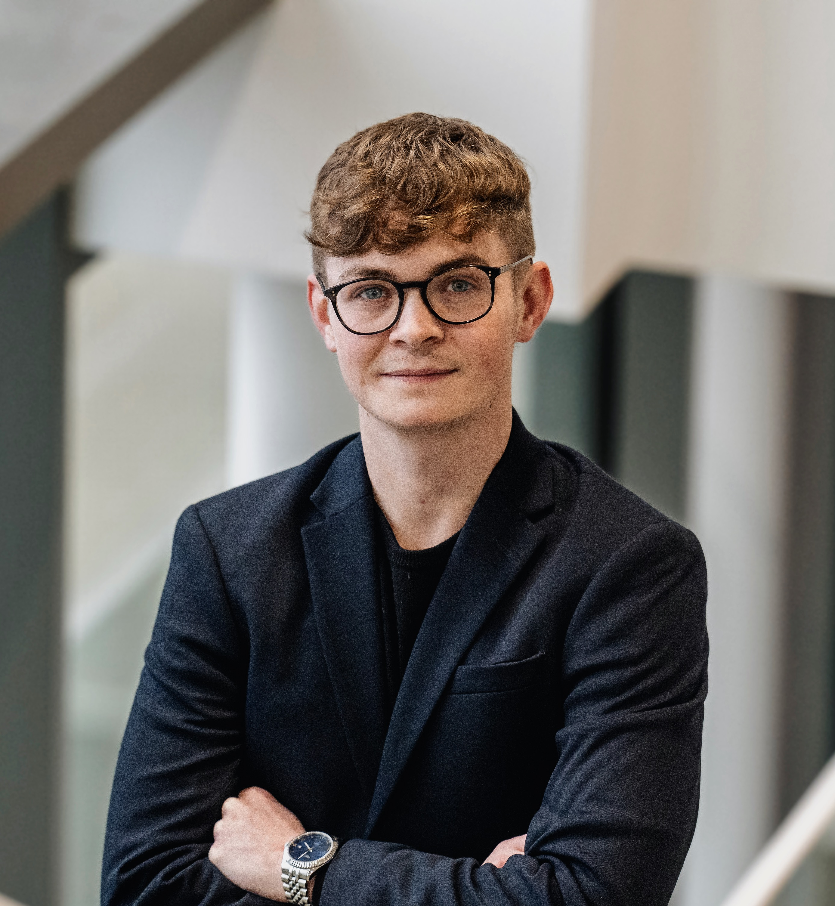

Mød iværksætteren
Søren Joachim Bruun

2019-2021
Entreprenørskab og design / IBA
2021-2022
BA (Hons), International Business fra Coventry University / IBA
2022-203
MBA fra Coventry University / IBA
Hej, jeg hedder Søren Joachum Bruun. Jeg er 25 år og været
iværksætter siden jeg var 16 år.
Jeg er jeg stifter af JOACHIM BRUUN, hvor jeg arbejder som
forretningsudvikler og rådgiver iværksættere, start-ups og SMV'er.
Jeg har tidligere været co-founder og partner i Micro Greens
Danmark, hvor vi blev kåret som 'Årets Iværksættere 2018' af
Business Kolding, derudover har jeg i forbindelse med mit studie på
E-design opnået en 3. plads til DM i Entreprenørskab 2020.
Jeg er iværksætter, da jeg altid har haft en skabertrang og brænder for at omsætte ideer til bæredygtige forretningskoncepter. Min ambition er at være med til at udvikle fremtidens virksomheder på international skala og derigennem sætte et positivt aftryk i verden. Derudover er jeg et stort konkurrencemenneske qua min fortid fra sporten og elsker udfordringerne der er forbundet med iværksætteri og problem-løsning.
Fun fact, jeg er tidligere eliteatlet på det danske landshold i judo